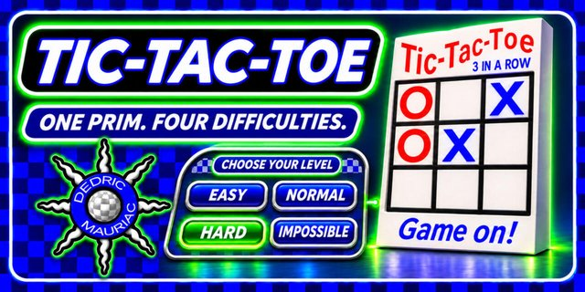

Tic-Tac-Toe
One prim, four levels of play

Tic-tac-toe on a single Second Life prim, against an AI with four levels from easy to impossible.
Executive summary
Why it exists
A simple game that a passer-by can walk up to and play, using as few prims as possible.
Outcome
Version 2.1 added the four levels of play.
My role
Author.
Technical overview
How it works
A one-prim board with a title and a status panel. A player touches an empty cell to start; the AI answers with O. Easy chooses a random empty cell. Normal goes for the win, blocks a win, then takes the center, the opposite corner, any corner or a side. Hard adds a 50% chance of forking and of blocking a fork. Impossible always forks and blocks forks.
Hard parts
Fitting the whole board on one prim: version 2.0 moved to a five-faced prim. Once a game starts no one else can interact, and it times out after five minutes if the player walks away.